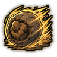
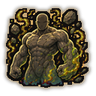
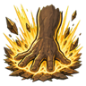

Technique trees › Clans and bloodlines
Akimichi clan
8 techniques in the Clan tab.
Needs the Akimichi gene.
Bubun Baika: Partial Expansion D
Chakra 15. Swell one arm to giant size and swing it at a nearby enemy.
Bubun Baika: Partial Expansion D
Chakra 15. Swell one arm to giant size and swing it at a nearby enemy.
Swell one arm to giant size and swing it at a nearby enemy.
| Rank | Chakra | Cooldown | Class level |
|---|---|---|---|
| D | 15 | 10 s | 2 |
Baika no Jutsu: Expansion CBA
Chakra 20 to 55. Grow to giant size: stronger, tougher, slower. Each rank grows larger.
Baika no Jutsu: Expansion CBA
Chakra 20 to 55. Grow to giant size: stronger, tougher, slower. Each rank grows larger.
Grow to giant size: stronger, tougher, slower. Each rank grows larger.
| Rank | Chakra | Cooldown | Class level |
|---|---|---|---|
| C | 20 | 1.2 hours | 4 |
| B | 35 | 1.2 hours | 9 |
| A | 55 | 1.6 hours | 14 |

Nikudan Sensha: Human Bullet Tank CB
Chakra 25 to 35. Roll into a giant ball and flatten everyone in a line. The spiked version also stabs.
Nikudan Sensha: Human Bullet Tank CB
Chakra 25 to 35. Roll into a giant ball and flatten everyone in a line. The spiked version also stabs.
Roll into a giant ball and flatten everyone in a line. The spiked version also stabs.
| Rank | Chakra | Cooldown | Class level |
|---|---|---|---|
| C | 25 | 20 s | 5 |
| B | 35 | 20 s | 10 |
Calorie Control C
Chakra 10. Burn stored calories into chakra and toughness for an hour.
Calorie Control C
Chakra 10. Burn stored calories into chakra and toughness for an hour.
Burn stored calories into chakra and toughness for an hour.
| Rank | Chakra | Cooldown | Class level |
|---|---|---|---|
| C | 10 | 2.4 hours | 3 |

Ironguts C
Chakra 10. Harden the body for a day against toxins, rot and disease.
Ironguts C
Chakra 10. Harden the body for a day against toxins, rot and disease.
Harden the body for a day against toxins, rot and disease.
| Rank | Chakra | Cooldown | Class level |
|---|---|---|---|
| C | 10 | 12 hours | 4 |

Chōbaika: Mega Palm Thrust B
Chakra 35. Expand both hands and slam them down on an area.
Chōbaika: Mega Palm Thrust B
Chakra 35. Expand both hands and slam them down on an area.
Expand both hands and slam them down on an area.
| Rank | Chakra | Cooldown | Class level |
|---|---|---|---|
| B | 35 | 30 s | 9 |
Chō Mode: Butterfly Mode A
Chakra 70. Burn fat into a vast surge of chakra: wings of light and enormous strength for one minute.
Chō Mode: Butterfly Mode A
Chakra 70. Burn fat into a vast surge of chakra: wings of light and enormous strength for one minute.
Burn fat into a vast surge of chakra: wings of light and enormous strength for one minute.
| Rank | Chakra | Cooldown | Class level |
|---|---|---|---|
| A | 70 | 12 hours | 15 |
Impact Wave S
Chakra 90. S-rank: a giant fist strike that sends a shockwave rolling across the battlefield.
Impact Wave S
Chakra 90. S-rank: a giant fist strike that sends a shockwave rolling across the battlefield.
S-rank: a giant fist strike that sends a shockwave rolling across the battlefield.
| Rank | Chakra | Cooldown | Class level |
|---|---|---|---|
| S | 90 | 4.8 hours | 18 |
Chakra is the technique's base cost, the number in its def. In play it is multiplied by the pawn's chakra energy usage multiplier, which traits (chakra artificer 90%, volatile conduit 110%), World of Naruto genes and jutsu enhancements change, so the technique window can show a slightly different number for each ninja. Cooldowns are in-game time, as the technique window shows them, and the pawn's cooldown stat shortens or lengthens them. World of Naruto gives every ninja a base of 100 maximum chakra; genes and traits change it.